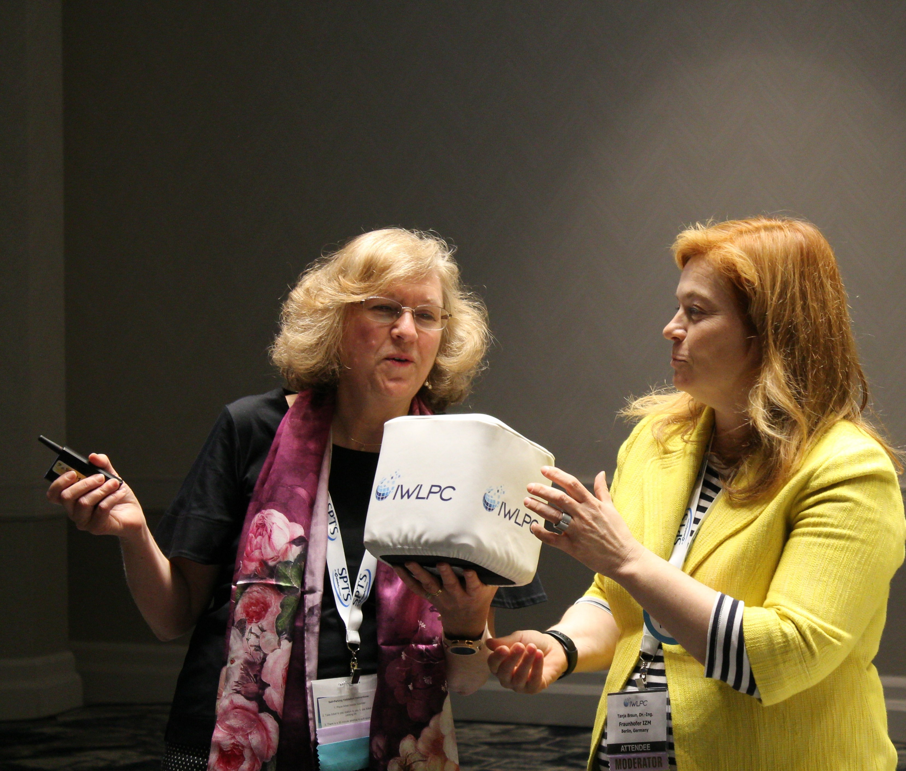

Industry Events - 2018
December 2018
The fan-out panel option: where is the sweet spot?


San Jose – October 23-25, 2018 – Fan-out wafer-level packaging (FOWLP) has expanded to many applications in a variety of formats and structures. The FOWLP market can be divided into three segments: high-density round carrier, standard-density round carrier, and large-area panel. With continued price pressure for integrated circuit (IC) package as-sembly, FOWLP is no exception. This drive for a lower cost assembly method has driven the development of large-area panel processing. There are many challenges to panel-level fan-out production. Many of these challenges are being addressed in consortia activities. But where does the panel fit and what types of packages make sense for large-area panel production? This was one of the topics discussed in the panel session that concluded IWLPC 2018 held in October in San Jose, California.
The panel discussion, entitled “What is the Sweet Spot for Large Area (Panel) Packaging?” was moderated by Jan Vardaman of TechSearch International and Tanja Braun of Fraunhofer IZM. Panel members included Richard Bae from Samsung Electro-Mechanics (SEMCO), Tim Olson of Deca Technologies, Markus Leitgeb of AT&S, Thomas DeBonis of Intel, and John Hunt of ASE.
Where do the companies stand?
Below is a summary of the various companies’ positions on the panel topics.
SEMCO believes the definition of embedded die vs. FOPLP is determined by the use of a RDL. If RDL is used, then it is considered FO. The company started production of embedded passives and activities in 2010. For example, Galaxy Watch uses FO with the panel process. The application processor is placed next to the PMIC, which is in the bottom package, using SEMCO’s FOPLP process. Backside RDL on package thereby enabling SEMCO to stack a standard memory, creating a package-on-package (PoP). In this example, RDL is used instead of packages such as molded core embedded package (MCeP) and sub-strate-like PCB (SLP). Intel started embedding capacitors and inductors a long time ago and noted that the use of RDL is what allows the package technology to be called FO. The difference is the L/S requirement: an L/S >15/15 could be con-sidered embedded die, while a finer pitch of <15/15 would be described as FO.

The panel also responded to the question regarding major applications for panel FO (FO in general). Deca believes there are three classes of FO applications: 1) Single-die package, which is happening today: e.g., Infineon’s eWLB is an early example still in volume production; 2) Multi-die system-in-package (SiP), and there are several such multi-die products. 3) Heterogeneous integration, greatest of all, has to use sub-1µm features. SEMCO noted that future 2020 DDR5 and GDDR6 power integrity and signal integrity will be driving new packages. Mean-while, the memory package will need to deal with more power. Future applica-tions include application processor plus memory.
According to AT&S, the RF market is a good candidate for panel FO, as well as multi-die packages and large body sizes. ASE noted that its first products with its M-Series FOWLP on a 300mm line will be PMIC and Audio CODEC, followed by RF. ASE has 300mm FOCoS for 2µm feature RDL. The next versions of FOCoS will be for high-bandwidth memory (HBM) and logic.
For its part, Intel noted that it builds and sells final product. With larger products, they lose more space around the edge of the die—such as when large product is within a SiP. It makes sense to integrate a big chip into a larger size panel.
The panel did not agree on an optimal panel size. Intel favors 510 x 515mm, oth-ers say 600mm x 600mm. ASE and Deca prefer 600mm x 600mm, but they did note that there is no reason to go to a panel option until 2020 when there is suffi-cient demand. It was noted that it is possible to cut the panel in four quarters and use 300mm tools. Meanwhile, SEMCO is looking at artificial intelligence (AI), servers, edge computing, etc., for panel applications. Edge computing may need large packages around >30mm, 50mm, or even 75mm.

The panel members agreed that yield is critical and that panel processes must have the same process yields as the round FOWLP process (i.e., 99.5% and above). One issue mentioned by ASE is that many panel tools are for PCB oper-ations and designed for operation in a Class 10,000 clean room. The FO process on panel requires class 100 designed equipment. Handling is a concern because panels cannot be handled manually. SEMCO is in mass production with high yield.
For the last question—How many panel lines are needed and what packages will move into production next?—stay tuned for more answers during next year’s IWLPC to be held again in San Jose, October 22-24, 2019.